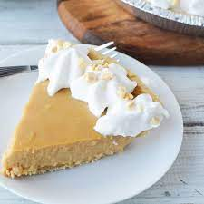

Peanut Butter Pie Recipe

Description
If you like peanut butter as well as pudding, you are going to love this pie. This pie is a slightly
healthier alternative to traditional pudding pie. The sugar used is less processed form of sugar known as
Tensai-tou. Tensai-tou is beet sugar made from Japanese beets. It is less refined than granular sugar but
still retains its sweetness. The pie pasty is also made using okara, a by-product from making soy milk.
This gives the pie crust a little more of a bland taste, but considering the pie itself is so sweet, it
makes for a good combination. Finally, the pudding layered on top is a sweet and soft vanilla flavor that
melts in your mouth as you eat it.
Ingredients
Pie Crust
- 3/4 Cup Okara Powder
- 1 cup and 1 tablespoon of All-purpose flour.
- 2 tablespoons of Sugar
- 1/2 teaspoon of salt
- 1/2 cup of solid coconut oil at about room temperature.
- 5 1/2 to 6 1/2 tablespoons of cold water
Peanut Butter Pudding
- 1/2 cup peanut butter
- 3/4 powdered sugar
- 1 package of instant pudding (I prefer vanilla)
- 2 cups of milk
- whipped topping
Steps
Making the Crust
- First, combine the Okara powder, flour, sugar, and salt together in a bowl.
- Next, fold the coconute oil into the mixture. You will have large solid chunks at the start.
Break them into smaller chunks as you mix it. Small granules are okay as they will melt quickly.
- Add the water a little bit at a time while mixing. The mixture should start becoming dough-like.
After adding a bit of water, you can use you hand to mix it and shape the dough into a ball.
It should be firm yet flexible. Be careful not to add too much water or your dough will become watery.
- Put the dough between two sheets of baking paper and roll it thin with a rolling pin. Fit it into your pie crust mold.
- Bake the pie crust at 250C for 20 minutes. Take out and let it cool while you prepare the pudding.
Making the Pudding
- First, combine the peanut butter and sugar in a bowl. Mix throughly and set aside until later.
- Next, combine the milk and instant pudding. Mix well. Depending on the kind of pudding, you may need
to mix it over heat. Follow the instructions for the pudding that you bought.
- Spread the peanut butter on the bottom of your pie crust. Try to spread it as evenly as possible.
- Gently pour the pudding on top of the peanut butter until it is just below the edge of the pie crust.
- Refridgerate for 2~3 hours until it is fully set.
- Decorate with your whipped topping and enjoy
Home